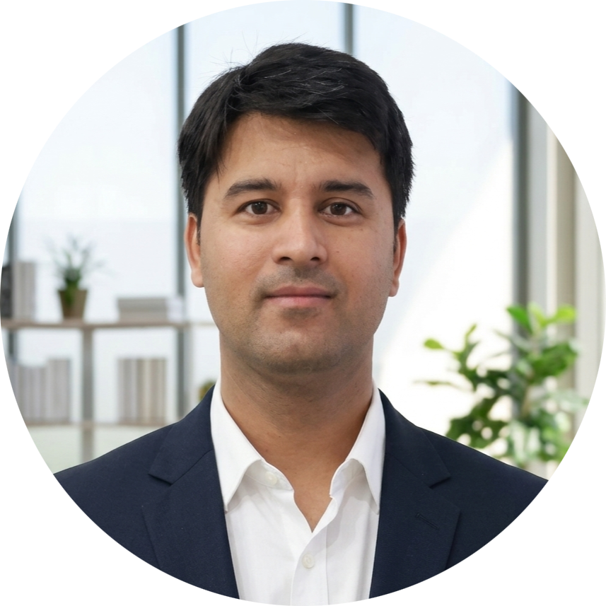

|
 |
I am currently a Postdoctoral Associate in the Mens, Manus, and Machina team at the Singapore-MIT Alliance for Research and Technology (SMART) Centre, where I am working with Daniela Rus, Armando Solar-Lezama, and Bryan Low. Prior to this, I was a Research Fellow in Department of Computer Science at National University of Singapore, where I worked with Bryan Low. I obtained my Doctor of Philosophy (Ph.D.) degree from Indian Institute of Technology Bombay (IIT Bombay), where Manjesh K. Hanawal and N. Hemachandra supervised me. My doctoral thesis received two awards: Naik and Rastogi Excellence in Ph.D. Thesis Award and COMSNETS Best Ph.D. Thesis Award. My current research focuses on building adaptive, modular, and trustworthy AI systems through the development and rigorous analysis of theoretically grounded, practical, and resource-efficient machine learning algorithms, including active learning, Bayesian optimization, and reinforcement learning. |
- Mar 2026 Four papers accepted at ICLR 2026 Workshops (Federated Unlearning, COBRA, Keep Everyone Happy, BarrierSteer).
- Jan 2026 Paper on ActiveDPO accepted at ICLR 2026.
- Nov 2026 Paper on Stochastic Multi-Armed Bandits with Limited Control Variate accepted at COMSNETS 2026.
- Sep 2025 Paper on Incentivizing Time-Aware Fairness in Data Sharing accepted at NeurIPS 2025.
- Aug 2025 Paper on Uncovering Scaling Laws for LLMs accepted at EMNLP Findings 2025.
© 2026 Arun Verma · Last updated: March 25, 2026.